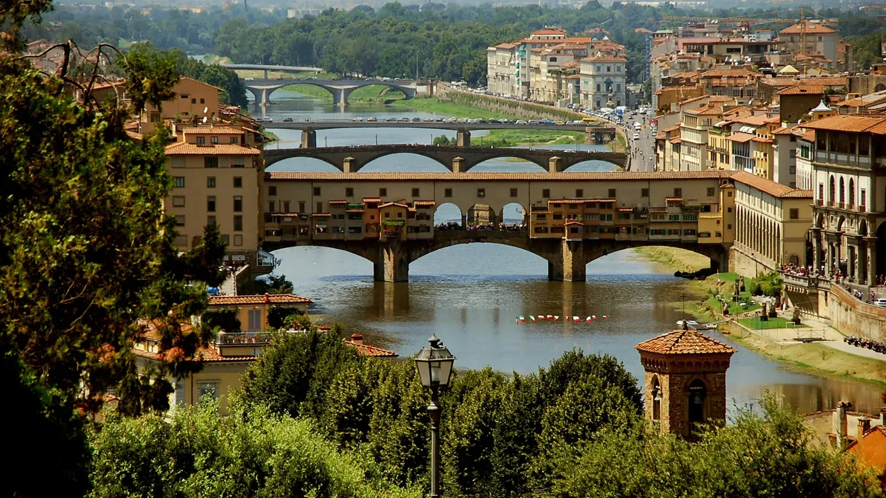

In breve
Il giorno 1 è per il centro storico: il Duomo con la cupola del Brunelleschi, Piazza della Signoria, gli Uffizi e il Ponte Vecchio. Il giorno 2 è per il David di Michelangelo all'Accademia, il mercato di San Lorenzo, poi l'Oltrarno (Palazzo Pitti e Giardino di Boboli) e il tramonto al Piazzale Michelangelo. Non mettere i musei di lunedì: Uffizi, Accademia e Palazzo Pitti sono chiusi.
Come arrivare a Firenze
In treno arrivi a Firenze Santa Maria Novella, a 10 minuti a piedi dal Duomo: circa 1h35 da Roma, 2h05 da Venezia e 1h55 da Milano con l'alta velocità. Puoi confrontare orari e prezzi dei treni su Omio o leggere Trenitalia o Italo.
In aereo, l'aeroporto di Firenze (FLR, Peretola) è collegato alla stazione dalla tramvia T2 in circa 20 minuti. Molti voli internazionali atterrano a Pisa: da lì serve circa un'ora di treno.
Giorno 1: Duomo, Uffizi e Ponte Vecchio
- Mattina: parti da piazza del Duomo. In cattedrale si entra gratis, ma la salita alla cupola (463 gradini), il campanile di Giotto e il Battistero sono a pagamento, e la cupola ha fasce orarie fisse: va prenotata.
- Tarda mattina: scendi per via dei Calzaiuoli fino a Piazza della Signoria e Palazzo Vecchio.
- Pomeriggio: la Galleria degli Uffizi (Botticelli, Leonardo, Caravaggio). Calcola almeno 2-3 ore e prenota un biglietto con orario.
- Tramonto e sera: attraversa il Ponte Vecchio e cena in zona Santo Spirito, la piazza più viva dell'Oltrarno.
Giorno 2: David, San Lorenzo e Oltrarno
- Primo mattino: la Galleria dell'Accademia per il David di Michelangelo: prendi il primo turno della giornata, quando la coda è più corta.
- Pranzo: il Mercato Centrale di San Lorenzo: banchi di cibo al piano di sopra, lampredotto e classici toscani.
- Pomeriggio: Palazzo Pitti e il Giardino di Boboli, oppure il Giardino Bardini per la vista senza folla.
- Tramonto: sali al Piazzale Michelangelo (o a San Miniato al Monte, poco sopra) per la vista classica sulla città.
Cosa prenotare in anticipo
| Luogo | Prenotare? | Nota |
|---|---|---|
| Uffizi | Sì | Chiuso il lunedì; ingresso a orario |
| Accademia (David) | Sì | Chiusa il lunedì; meglio il primo turno |
| Cupola del Duomo | Sì, orario obbligatorio | In alta stagione esaurita giorni prima |
| Palazzo Pitti / Boboli | Consigliato | Pitti chiuso il lunedì |
| Cattedrale (interno) | No | Gratis, coda al mattino |
I musei statali sono spesso gratuiti la prima domenica del mese, ma quel giorno le code sono lunghissime. Compra solo dai siti ufficiali o da rivenditori noti.
Dove dormire a Firenze
Santa Maria Novella è la zona più comoda (stazione, gite a Pisa e Siena). Santa Croce e la zona del Duomo ti mettono in mezzo a tutto, mentre l'Oltrarno è più tranquillo e con più trattorie locali. Firenze applica una tassa di soggiorno a notte, da pagare in hotel. Confronta gli hotel a Firenze.
Consigli
- Arrivi da Roma o prosegui per Venezia? Leggi Roma, Firenze e Venezia in 7 giorni.
- Poi vai alle Cinque Terre? Leggi Cinque Terre in treno.
- Sui regionali controlla le regole per convalidare il biglietto; prima di partire verifica gli scioperi dei treni.
- Il centro di Firenze si gira a piedi: scarpe comode valgono più di qualsiasi abbonamento.
Orari, prezzi e regole sono indicativi e possono cambiare: controlla sempre prima di partire.
Verificato sulle fonti ufficiali. Regole e prezzi cambiano: controlla sempre su questi siti prima di partire.
Organizza il viaggio a Firenze
Alcuni link sono affiliati: se prenoti tramite loro non paghi nulla in più e aiuti 687 a restare gratuito.
I tuoi due giorni a Firenze, in ordine.
In 687 Italy la tappa di Firenze ha il treno giusto, i musei nell'ordine a piedi con i giorni di chiusura e le mappe offline. Se una coda o il meteo cambiano i piani, NOW ricostruisce il resto della giornata.
Fonti
Verificate su questi siti ufficiali a novembre 2026. Prezzi e regole possono cambiare: controlla sempre prima di partire.